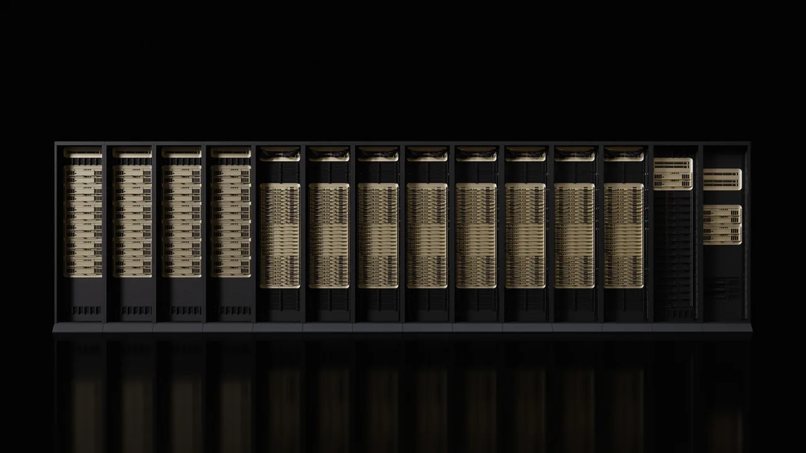

엔비디아 주주가 이미 알고 있는 이야기는 명확합니다. AI 데이터센터 수요는 강하고, 엔비디아는 그 수요의 중심에 있습니다. 그러나 주가가 이미 그런 기대를 크게 반영한 뒤에는 “얼마나 많이 팔았나”보다 “누가 계속 비용을 감당할 수 있나”가 더 중요해집니다.
엔비디아는 2027회계연도 1분기에 매출 816.15억달러를 기록했습니다. 전년 동기보다 85% 늘어난 숫자이고, 데이터센터 매출만 752억달러입니다. 다음 분기 매출 전망도 910억달러 안팎입니다. 이 정도면 성장 기업이라기보다 세계 최대 인프라 공급망 중 하나로 읽어야 합니다.
그래서 이번 엔비디아 글의 핵심은 루빈이라는 새 이름이 아닙니다. 루빈이 고객의 데이터센터 설계, 전력 계약, 네트워크 장비, 장기 공급 약정까지 얼마나 깊게 묶어 놓는지입니다. 엔비디아가 계속 좋은 주식이 되려면 AI 수요가 있다는 말보다, 그 수요가 몇 개 고객에 집중되지 않고 높은 마진과 현금흐름으로 반복되는지가 더 중요합니다.
고객 셋이 숫자를 흔듭니다

엔비디아 실적에서 가장 먼저 볼 숫자는 매출 증가율이 아니라 고객 집중도입니다. 회사의 2027회계연도 1분기 10-Q에 따르면 세 직접 고객이 각각 총매출의 21%, 17%, 16%를 차지했습니다. 모두 주로 컴퓨트와 네트워킹 부문에서 나온 매출입니다. 이름은 공개되지 않지만, 대형 클라우드와 AI 인프라 고객의 투자 속도가 엔비디아 손익계산서를 크게 움직인다는 뜻입니다.
이 점은 나쁘기만 한 신호가 아닙니다. 대형 고객이 한 번에 대규모 AI 공장을 짓기 때문에 엔비디아는 짧은 기간에 엄청난 매출을 만들 수 있습니다. 문제는 같은 구조가 반대로도 작동한다는 데 있습니다. 고객 몇 곳이 전력 확보, 데이터센터 인허가, 내부 투자수익률 계산 때문에 주문 속도를 늦추면 성장률도 빠르게 둔화될 수 있습니다.
엔비디아는 이번 분기부터 데이터센터 안에서도 하이퍼스케일과 기업·산업·국가 AI 수요를 더 구분해 보여주려 합니다. 이 변화는 투자자에게 유용합니다. 매출이 계속 늘어도 그 증가분이 몇몇 초대형 고객에서만 나오는지, 더 넓은 기업과 국가 단위 AI 공장으로 퍼지는지에 따라 주가가 받을 수 있는 신뢰가 달라지기 때문입니다.
루빈은 칩보다 랙입니다
관련 영상
엔비디아 GTC 루빈·블랙웰 발표를 요약한 한국어 롱폼 영상
루빈을 단순히 다음 세대 GPU로 보면 엔비디아의 전략을 절반만 보게 됩니다. 엔비디아가 강조하는 루빈 NVL72는 72개 루빈 GPU와 36개 베라 CPU를 엔비링크 6, 커넥트엑스-9, 블루필드-4, 이더넷 스위치와 함께 묶는 랙 단위 플랫폼입니다. 고객 입장에서는 칩을 사는 것이 아니라 AI 공장 한 덩어리를 설계하는 일에 가깝습니다.
엔비디아는 루빈 플랫폼이 블랙웰 대비 거대 혼합 전문가 모델 학습에 필요한 GPU 수를 4분의 1로 줄이고, 추론 토큰당 비용을 10분의 1까지 낮출 수 있다고 설명합니다. 이 숫자가 실제 고객 환경에서 확인되면 엔비디아의 방어력은 더 강해집니다. 고객은 GPU 가격만 비교하는 대신 전력 사용량, 네트워크 안정성, 랙 배치, 소프트웨어 최적화까지 한꺼번에 비교해야 하기 때문입니다.
여기서 브로드컴과 AMD가 관련종목으로 들어오는 이유도 분명합니다. 브로드컴은 맞춤형 AI 반도체와 네트워킹 쪽에서 대형 고객의 대안을 만들 수 있고, AMD는 범용 GPU 대체재로 가격과 공급 조건을 압박할 수 있습니다. 다만 엔비디아가 루빈을 랙 단위 플랫폼으로 묶을수록 경쟁사는 칩 하나의 성능보다 전체 시스템 비용을 설득해야 합니다.
중국 공백은 숫자에서 빠져 있습니다
엔비디아의 다음 분기 매출 전망 910억달러에는 중국 데이터센터 컴퓨트 매출이 가정돼 있지 않습니다. 이 문장은 작지만 중요합니다. 중국 수요가 완전히 사라졌다는 뜻이 아니라, 규제와 수출 통제가 엔비디아 데이터센터 성장식에서 이미 별도 변수로 밀려났다는 뜻입니다.
투자자에게는 두 가지 해석이 가능합니다. 하나는 긍정적입니다. 중국 데이터센터 컴퓨트 매출을 넣지 않고도 900억달러대 분기 매출을 제시했다면, 미국과 기타 지역의 클라우드, 기업 AI, 국가 AI 공장 수요가 매우 강하다는 의미입니다. 다른 하나는 신중한 해석입니다. 중국에서 빠진 공간을 계속 다른 지역이 채워야 하므로, 미국 대형 고객과 소버린 AI 프로젝트의 투자 속도가 더 중요해졌습니다.
이 지점에서 마이크로소프트 같은 클라우드 고객을 함께 봐야 합니다. 마이크로소프트가 데이터센터 투자를 이어 가면 엔비디아의 루빈 전환은 더 자연스럽게 진행됩니다. 반대로 클라우드 기업들이 AI 서비스 매출과 자본지출 사이의 간격을 줄이려 한다면, 엔비디아의 전망은 여전히 높아도 시장은 성장의 질을 의심할 수 있습니다.
공급 약속은 이익의 그림자입니다
엔비디아가 강해질수록 투자자가 놓치기 쉬운 숫자는 공급 약정입니다. 2027회계연도 1분기 10-Q에 따르면 2026년 4월 26일 기준 엔비디아의 구매 약정은 1,190억달러이고, 이 중 950억달러가 회계연도 2027년 남은 기간 지급될 예정입니다. 클라우드 서비스 약정도 300억달러입니다. 이는 성장을 위해 엔비디아도 이미 큰 비용 약속을 걸어 두고 있다는 뜻입니다.
이 약정은 강한 수요를 확보하기 위한 무기입니다. 첨단 패키징, 파운드리, 메모리, 네트워킹 부품의 공급이 빡빡할수록 엔비디아는 먼저 물량을 잡아야 합니다. 하지만 수요 예측이 틀리면 같은 약정은 부담이 됩니다. 회사도 긴 제조 리드타임과 공급 부족 상황에서 특정 부품의 리드타임이 12개월을 넘을 수 있다고 설명합니다.
엔비디아가 1분기에 약 200억달러를 주주에게 돌려줬고, 추가 800억달러 자사주 매입 승인과 배당 확대를 발표한 점은 현금 창출력이 강하다는 신호입니다. 동시에 투자자는 이 자본환원이 공급 약정과 함께 지속 가능한지 봐야 합니다. 매출총이익률 75% 안팎이 유지되고 고객 주문이 넓어지면 자본환원은 신뢰를 더합니다. 반대로 몇몇 고객 주문과 긴 공급 약정이 엇갈리면 같은 숫자는 부담으로 읽힐 수 있습니다.
엔비디아를 판단할 때 이제 질문은 단순하지 않습니다. AI 수요가 있느냐가 아니라, AI 공장을 지을 고객이 계속 돈을 쓰고, 전력과 네트워크가 따라오며, 루빈 전환이 고객의 비용을 실제로 낮춰 주느냐입니다. 다음 실적에서 볼 것은 매출 1줄이 아니라 하이퍼스케일과 기업·산업 AI 수요의 분산, 데이터센터 네트워킹 성장, 중국 제외 전망 유지, 공급 약정 대비 현금흐름입니다. 그 네 줄이 함께 맞을 때 엔비디아의 루빈 이야기는 제품 발표가 아니라 반복 가능한 사업 모델로 읽힙니다.